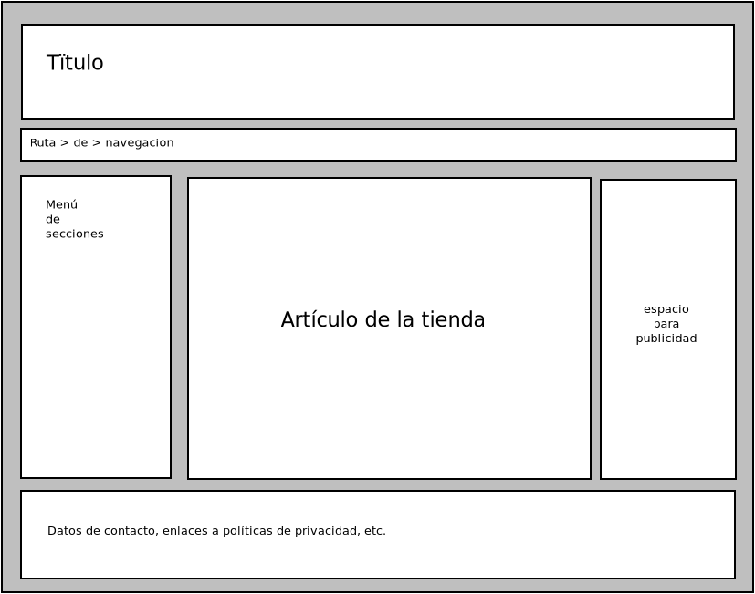

6.6. Estructura semántica¶
Bajo este epígrafe se tratarán los elementos que permiten estructurar semánticamente el documento HTML.
Nota
La idea de estos elementos es que sean transparentes al usuario que accede al documento gracias a sus ojos mediante un navegador; pero que, sin embargo, sirvan para dotar de significado semántico a las distintas partes del documento a fin de que un lector sea capaz de contar a una persona ciega cuál es el contenido de la página.
Nota
A pesar del esfuerzo de HTML por dotar de mayor semántica a sus elementos, aún puede interesarnos reforzar la semántica para facilitar la accesibilidad. Por ello existe ARIA, una colección de atributos que permiten afinar con más precisión la semántica. El grupo proporciona unos principios básicos y algunos consejos, como los patrones más habituales que podemos aplicar para mejorar la accesibilidad de nuestra web.
Ver también
Puede sernos de mucha utilidad el tutorial del W3C sobre estructura del documento.
Contenedor genérico de bloques. |
|
Agrupa un contenido como sección en un documento. |
|
Agrupa varios elementos que constituyen un encabezado, como el elemento de encabezado en sí y un subtítulo. |
|
Agrupa un contenido que tiene significado por sí mismo. |
|
Acotación tangencialmente relacionada con el texto principal. |
|
Elemento autocontenido como una imagen con su leyenda o una cita junto a la obra de la que se extrae. |
|
Identifica una sección del documento dedicada a proporcionar enlaces de navegación a partes del propio documento (un índice, por ejemplo) u otros documentos. |
|
Contenido introductorio. |
|
Contenido principal de la página (no de una sección) |
|
Contenido que remata una parte del documento. |
- div (div)
Es un elemento que permite agrupar otros elementos de bloque, pero sin tener asignado un papel semántico concreto. Es el equivalente en el bloque a <span> en la línea. En HTML4, por falta de elementos más específicos se usaba para estructurar los documentos:
<!-- Este es un típico código de HTML4: NI SE LE OCURRA REPRODUCIRLO --> <div role="section"> <h2>Los mamíferos</h2> <p>Bla, bla, bla...</p> <div role="section"> <h3>Los homínidos</h3> <p>Bla, bla, bla</p> </div> <div role="section"> <h3>Los felinos</h3> <p>Bla, bla, bla</p> </div> </div>
Aunque este uso está obsoleto y absolutamente desaconsejado, el elemento sigue teniendo utilidad para agrupar elementos cuyo significado no se ajusta a ninguno de los que tienen los restantes elementos. Por ejemplo, puede ser útil para establecer un idioma con el atributo
lango a efectos de presentación
- section (section)
El elemento nació en HTML5 con la intención de estructurar semánticamente el contenido del documento de esta forma:
<!-- No utilice esta estructura: es un ejemplo de lo que se pensó que fuera y no fue --> <section> <h1 id="mamiferos">Los mamíferos</h1> <p>Bla, bla, bla</p> <section> <h1 id="hominidos">Los homínidos</h1> <p>Bla, bla, bla</p> </section> <section> <h1 id="felinos">Los felinos</h1> <p>Bla, bla, bla</p> </section> </section>
donde todos los elementos que marcan la cabecera son <h1>. Esto debería servir para generar esta estructura:
1. Los mamíferos 1.1 Los homínidos 1.2 Los felinos
El problema es que esta idea nunca la llegaron a implementar los navegadores y tampoco llegó a plasmarse nunca en las especificaciones oficiales del W3C para HTML5.
Ver también
Adrian Roselli tiene un interesantísimo artículo sobre cómo, en realidad, a pesar de los múltiples intentos, nunca ha habido en HTML un algoritmo para la estructuración del documento basado en <section> y un elemento único de cabecera (en el ejemplo la combinación de <section> y <h1>).
En realidad, la única forma de estructurar semánticamente el documento es usar las cabeceras de distinto nivel (<h1>, <h2>, etc), porque la estructura anterior es semánticamente equivalente a:
<h1 id="mamiferos">Los mamíferos</h1> <p>Bla, bla, bla</p> <h1 id="hominidos">Los homínidos</h1> <p>Bla, bla, bla</p> <h1 id="felinos">Los felinos</h1> <p>Bla, bla, bla</p>
lo cual implica poner al mismo nivel los tres encabezados. Así pues, lo correcto es:
<h1>Reino animal</h1> <p>Bla, bla, bla</p> <h2>Los mamíferos</h2> <p>Bla, bla, bla</p> <h3>Los homínidos</h3> <p>Bla, bla, bla</p> <h3>Los felinos</h3> <p>Bla, bla, bla</p> <h2>Los reptiles</h2> <p>Bla, bla, bla</p>
cuya estructura semántica es:
1. Reino animal 1.1 Los mamíferos 1.1.1 Los homñinidos 1.1.2 Los felinos 1.2 Los reptilesAdemás, se recomienda que sólo exista un <h1> en el documento que actúe como su título.
Así, pues, ¿para qué sirve <section>? Desde luego, no para estructurar el documento, que fue para lo que se ideó. En opinión de Bruce Lawson en su artículo Why You Should Choose HTML5 article Over section, simplemente, para señalar dónde empieza y acaba una porción del texto que por alguna razón queremos particularizar y siempre deberíamos acompañarla de un atributo aria-label para que un lector web lea su valor y se justifique esa particularización. Al final de ese artículo, hay unas conclusiones interesantes sobre los elementos de estructura.
Nota
Inspeccionar el código HTML del artículo de Smashing Magazine es un buen ejercicio para comprobar cómo se utilizan los elementos de estructura semántica (<header>, <main>, <footer>, <nav>, <aside>, etc.) citados en este apartado. En particular <section> se utiliza únicamente para encerrar dentro de él la entradilla inicial del artículo.
- hgroup (hgroup)
Permite agrupar varios elementos que hagan de encabezado conjunto (recordemos que <h1> y demás familia sólo permiten incluir dentro de sí elementos en línea):
<hgroup> <h2>Los mamíferos</h2> <p>Los reyes de la creación</p> </hgroup> <p>Bla, bla, bla</p>
- article (article)
El elemento está destinado a agrupar contenidos independientes de por sí, que pueden ser reutilizados y repetidos. Por ejemplo, una entrada de blog o el artículo de un periódico o un mensaje de texto. Son, pues, una parte autocontenida que puede reusarse perfectamente en otra página:
<article id="entrada_01" class="entrada"> <header> <h1>Hoy he comprado libros</h1> <p>por Fulano, <time datetime="2019-04-01">1 de abril de 2019</time> </header> <p>Pues sí, señores, hoy me he levantado con unas irresistibles ganas de ampliar mi biblioteca y, etc... <footer> <!-- Información relativa a categoría y etiquetas --> </footer> </article>
- aside (aside)
Representa una porción del documento que está vagamente relacionada con el contenido principal. Podría ser apropiada, por ejemplo, para incluir publicidad, un aparte donde se incluye una breve reseña bibliográfica del autor, un conjunto de enlaces a direcciones relacionadas, las acotaciones que se incluyen en los textos de revistas, etc:
<section> <h1>Los mamíferos</h1> <p>Bla, bla, bla... <aside>En el mundo existen más de 4000 especies de mamíferos.</aside> <p>Más bla, bla, bla. </section>
- figure (figure)
Representa un bloque de contenido con información adicional que por lo general contiene una leyenda. El caso más tipico es el de incluir una imagen con un pie de foto que la describe o una cita larga con la referencia a la obra de la que sale:
<figure> <svg role="img" aria-labelledby="japan" xmlns="http://www.w3.org/2000/svg" width="200" viewBox="0 0 900 600"> <title id="japan">Bandera de Japón</title> <rect fill="#fff" height="600" width="900"/> <circle fill="#bc002d" cx="450" cy="300" r="180"/> </svg> <figcaption>Bandera de Japón</figcaption> </figure>
Bandera de Japón Para expresar su leyenda <figure> permite añadir un elemento <figcaption> antes o después del contenido principal, que en este caso es una imagen en que se ha usado un elemento <svg> que se verá más adelante.
Prudencia
Si se usa <img> dentro de <figure>, puede dejarse vacío el atributo alt, puesto que <figcaption> hará su función. Deberá, sin embargo, aparecer puesto que es un atributo obligatorio.
- header (header)
Incluye contenido introductorio como encabezados o ayudas a la navegación. Como ejemplo, consulte el incluido para <article>. En esta página que lee, la parte superior que no forma parte de esta sección html-struct también podríamos incluirla dentro de un elemento <header>.
- main (main)
Elemento destinado a incluir el contenido principal del documento. Debe, por tanto, sólo existir uno en la página. En esta página que lee, todo el cuerpo dedicada a html-struct podría ir incluido en este elemento.
6.6.1. Ejercicios propuestos¶
Tome la página sobre elementos básicos y reproduzca hasta la exposición del elemento <a> (inclusive). A partir de ahí incluya sólo la estructura con los títulos y un párrafo que diga «Aquí se trata…».
Incluya:
La barra superior de navegación.
La tabla de contenidos, pero no las siguientes secciones de la barra lateral. Olvídese de que está a la izquierda: sitúela bajo la barra.
El cuerpo del texto tal como se ha descrito.
El pie de la página
Componga la página web de una tienda de informática que tendrá la siguiente estructura:
El aspecto o la maquetación son irrelevantes a estas alturas. Lo que debe hacer es:
Definir correctamente los elementos HTML que componen la página en función de qué papel cumplen.
Dotar de contenido cada uno de estos bloques:
Título: Incluya algo apropiado como un logo o similar.
Defina correctamente la ruta de navegación del artículo.
Defina correctamente el menú de navegación con algunas categorías y subcategorías dentro de ellas.
Incluya la descripción de un artículo:
Imagen.
Lista de características.
Párrafo de descripción.
Para la publicidad no ponga nada, simplemente reserve el elemento apropiado.
Incluya información para el pie de la página.